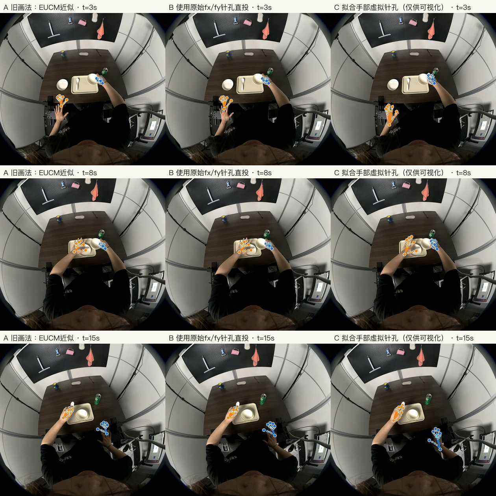
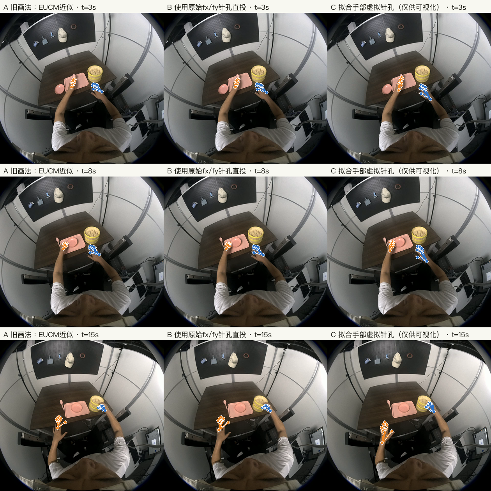
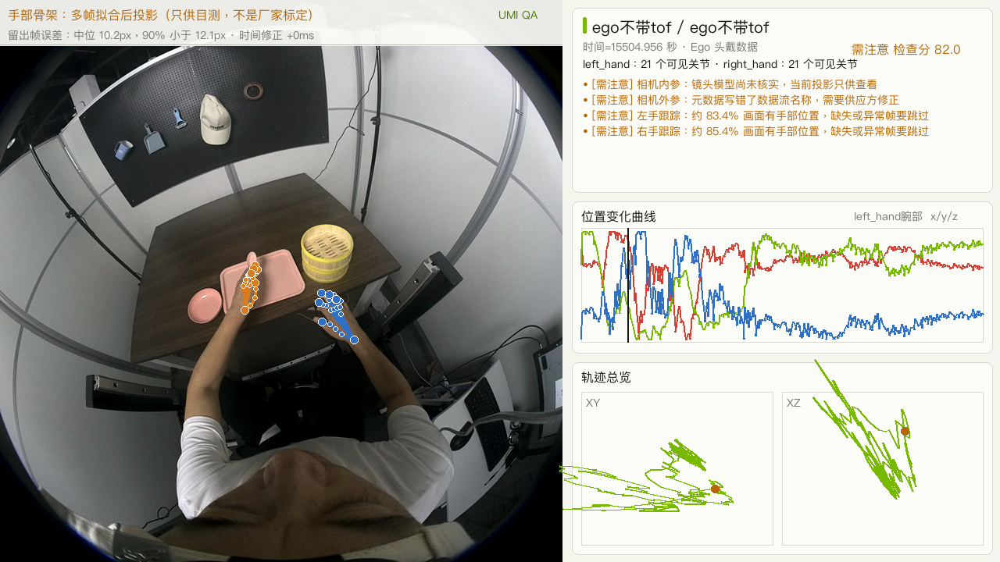
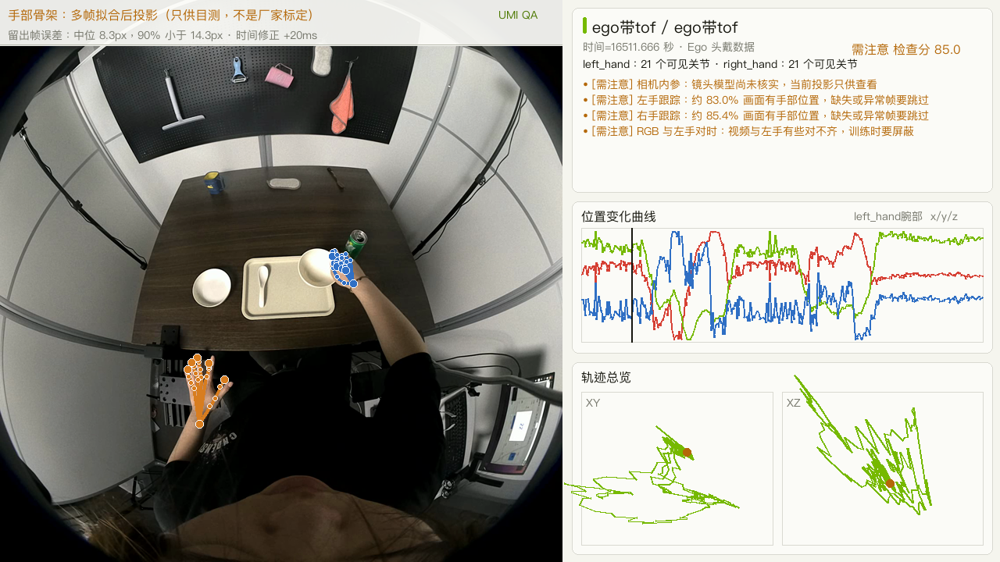
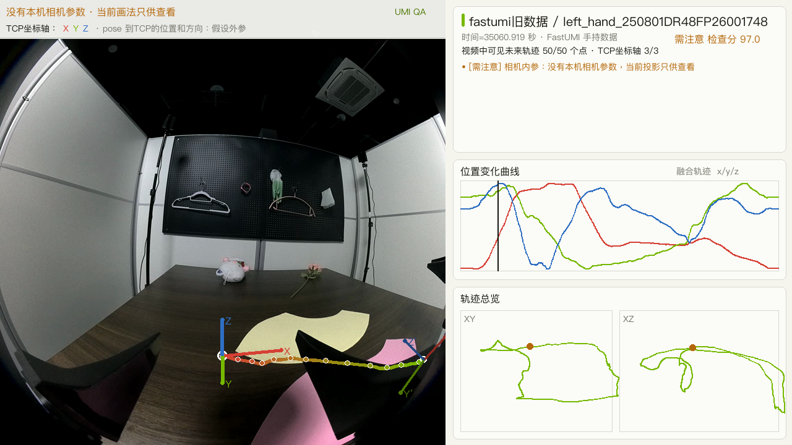
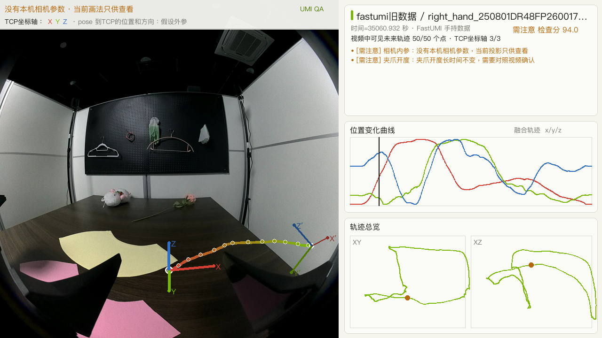
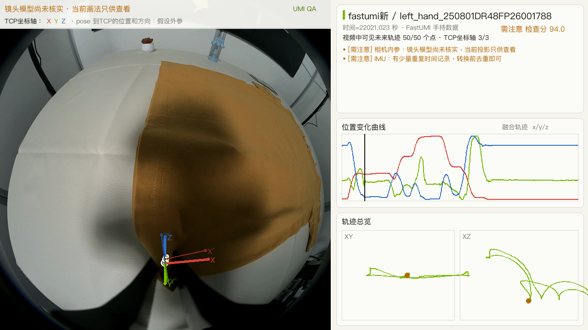
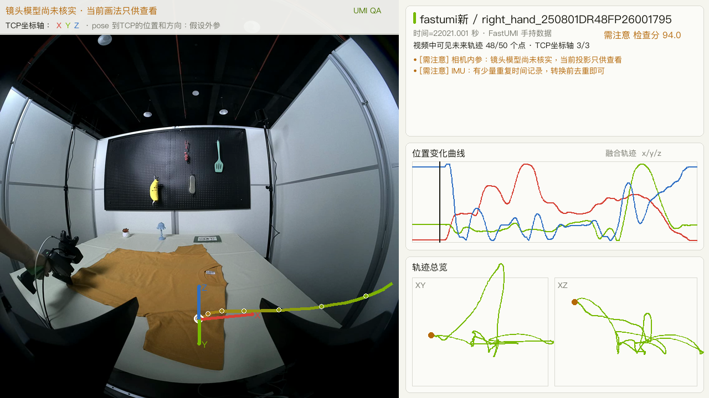

这批数据到底能不能用
我们先检查视频和传感器文件有没有坏、各路数据的时间能不能对上，再判断轨迹 能不能当作机器人末端位置使用。检查分越高，只代表发现的文件问题越少， 不代表机器人上机一定成功。
这批数据现在能用到哪一步
简单说，这批数据已经记录了“设备怎么移动”，但还没有完整说明 “记录的是设备上的哪个点”，也没有说明“每段视频在完成什么任务”。
看视频、检查运动、清洗数据
六段视频都能播放，轨迹、IMU 和夹爪数据也能读取，可以开始筛选坏帧和整理训练格式。
Ego：3D 手点能读，直接叠到视频会偏
手腕、指根和指尖的 3D 数值都在，但按相机参数直接画会错位。新版用多帧拟合把目测中位偏差降到约 8–10 像素；这不是厂家标定，训练前仍要供应方说明手点坐标系和投影模型，并过滤没跟踪到手的帧。
FastUMI：EEF pose 的坐标原点在哪里
EEF pose 是泛称，原点可以放在法兰、夹爪中心（TCP）或追踪器上。运动轨迹本身可以读取和转换；只需让供应方确认 merged_trajectory 已经是哪一个点。如果还不是 TCP，再补一份固定变换即可。当前视频顶部标为“假设值”的 TCP 只是为了把坐标轴画出来，不能据此证明它就是真实 TCP。这是交付说明缺口，不等于数据不能用。
没有写“这段视频在做什么”
数据能告诉我们手和相机怎么动，却没写每段视频在做什么、最后做成功没有。只做轨迹转换不受影响；训练听懂文字指令的机器人则必须补标。
真机部署提醒（不计入本批数据质量扣分）：任何示教数据放到具体机器人上， 都还要适配机器人模型、控制接口、速度限制和碰撞保护。这属于购买后的部署工作， 不是 FastUMI 这批数据独有的问题。
为什么确定没有任务文字？
已扫描 126 个 TXT/CSV/JSON 文件、 4 个原始 RAR 的 894 个目录成员，没有找到任务说明字段； 7 个 MP4 中音频流 0 条、字幕流 0 条，也不能从语音或字幕恢复指令。 文件中的文字只是字段名、关节名、时间戳、相机参数和轨迹统计。
Ego 骨架为什么会偏，重新投影后怎样
extrinsic.json 当成已经证明可用的“手点到 RGB”外参。ego带tof
旧画法的中位偏差约 48.6 像素；改用手部虚拟针孔后，留出帧中位偏差约 8.3 像素，90% 的观测小于 14.3 像素。时间微调 +20 毫秒。这只说明叠图更准，不代表已经得到真实相机外参。
查看拟合出的目测参数
{
"fx": 393.8890645448193,
"fy": 638.8595210545146,
"u0": 638.0323579469904,
"v0": 641.3214106675481,
"width": 1280.0,
"height": 1280.0
}ego不带tof
旧画法的中位偏差约 24.3 像素；改用手部虚拟针孔后，留出帧中位偏差约 10.2 像素，90% 的观测小于 12.1 像素。时间微调 +0 毫秒。这只说明叠图更准，不代表已经得到真实相机外参。
查看拟合出的目测参数
{
"fx": 396.3011880370191,
"fy": 635.1257154787867,
"u0": 640.7853833363511,
"v0": 641.286685705727,
"width": 1280.0,
"height": 1280.0
}新版视频使用两套数据分别拟合、并用另一半帧检查过的“手部虚拟针孔”，同时按真实 RGB 时间戳取样并插值手点。它适合人工看叠图是否跟手，但不能用于毫米级标定、三维测量或作为训练真值。
{kind=link}

{kind=link}

数据集汇总
| 数据集 | 录制数量 | 状态 | 自动检查分（不是成功率） |
|---|---|---|---|
| ego不带tof | 1 | 需注意 | 82.0 |
| ego带tof | 1 | 需注意 | 85.0 |
| fastumi旧数据 | 2 | 需注意 | 95.5 |
| fastumi新 | 2 | 需注意 | 94.0 |
总共检查 111 项：85 项正常，18 项需要注意， 0 项无法使用，其余只是补充说明。
ego不带tof / ego不带tof
{kind=link}

| 类别 | 检查项 | 状态 | 结论 |
|---|---|---|---|
| 视频 | RGB 视频规格 | 正常 | 视频规格为 1280x1280、60.000 帧/秒，可以正常读取查看专业数值{
"path": "[local path omitted]",
"codec_name": "mpeg4",
"codec_long_name": "MPEG-4 part 2",
"width": 1280,
"height": 1280,
"fps": 60.0,
"nb_frames": 1561,
"duration_s": 26.016667,
"pix_fmt": "yuv420p",
"size_bytes": 81991576
} |
| 视频 | RGB 视频能否完整播放 | 正常 | 整段视频都能正常读取，没有发现损坏帧查看专业数值{} |
| 时间顺序 | RGB 时间顺序 | 正常 | 时间顺序正常，没有倒退或无效时间查看专业数值{
"count": 1561,
"nonfinite_count": 0,
"duplicate_timestamp_count": 0,
"backward_timestamp_count": 0,
"median_dt_ms": 16.657999999551976,
"p99_dt_ms": 16.68640999916534,
"max_dt_ms": 16.7379999984405,
"estimated_hz": 60.031216234055435,
"duration_s": 25.986155000000508
} |
| 文件对应关系 | 视频帧与时间戳数量 | 正常 | 视频共有 1561 帧，并且每帧都有对应的时间戳查看专业数值{
"video_frames": 1561,
"timestamp_rows": 1561,
"difference": 0
} |
| 视频 | RGB 画面是否正常 | 正常 | 抽查画面正常，没有黑屏或明显缺少细节的画面查看专业数值{
"sample_count": 130,
"black_frame_fraction": 0.0,
"low_detail_frame_fraction": 0.0,
"static_transition_fraction": 0.0,
"longest_static_run_s": 0.0,
"motion_energy_p50": 5.798671722412109,
"motion_energy_p99": 13.062661170959473
} |
| 相机标定 | 相机内参 | 需注意 | 相机参数文件能读取，但镜头模型还没用官方方法核对；当前投影只适合人工检查，不能当训练真值查看专业数值{
"fx": 394.09381103515625,
"fy": 394.0301513671875,
"cx": 640.7218017578125,
"cy": 640.3656005859375,
"alpha": 0.6833307147026062,
"beta": 0.7398630380630493,
"width": 1280.0,
"height": 1280.0,
"model": "seucm",
"cx_is_null": true,
"cy_is_null": true,
"camera_matrix_is_standard_K": false
} |
| 相机标定 | 相机外参 | 需注意 | 相机外参写成了不存在的 RGBD 数据流，元数据需要供应方修正查看专业数值{
"finite_fraction": 1.0,
"position_norm_m": 0.0253590850364429,
"quaternion_norm_error": 5.522446167027795e-09,
"image_topic": "/xv_sdk/250801DR48FP25002649/rgbd_camera/image"
} |
| 运动轨迹 | SLAM 位姿 | 正常 | 轨迹时间顺序、位置数值和旋转格式都正常，没有发现明显坏点查看专业数值{
"count": 12991,
"nonfinite_count": 0,
"duplicate_timestamp_count": 0,
"backward_timestamp_count": 0,
"median_dt_ms": 2.0000000004074536,
"p99_dt_ms": 2.162999999400199,
"max_dt_ms": 12.851999999838881,
"estimated_hz": 499.9999998981366,
"duration_s": 26.007997000000614,
"finite_row_fraction": 1.0,
"quaternion_norm_error_p99": 2.55351295663786e-15,
"quaternion_norm_error_max": 2.7755575615628914e-15,
"linear_speed_mps_p50": 0.032701449795478496,
"linear_speed_mps_p95": 0.10448043608568133,
"linear_speed_mps_p99": 0.15846854318502943,
"linear_speed_mps_max": 0.1896280929549639,
"angular_speed_radps_p50": 0.07625553435446239,
"angular_speed_radps_p95": 0.20314008074023504,
"angular_speed_radps_p99": 0.25683330678305827,
"angular_speed_radps_max": 0.3687151084567519,
"consecutive_duplicate_value_count": 0,
"sudden_change_count": 0,
"sudden_change_fraction": 0.0,
"extreme_position_count": 0,
"max_residual_z": 1386.8529184163274
} |
| IMU | IMU | 正常 | IMU 的时间顺序和数值都正常查看专业数值{
"count": 13165,
"nonfinite_count": 0,
"duplicate_timestamp_count": 0,
"backward_timestamp_count": 0,
"median_dt_ms": 1.9739999988814816,
"p99_dt_ms": 2.011000000493368,
"max_dt_ms": 7.905000000391738,
"estimated_hz": 506.58561325563596,
"duration_s": 26.007862000000387,
"consecutive_duplicate_count": 0,
"consecutive_duplicate_fraction": 0.0,
"longest_duplicate_run": 0,
"finite_fraction": 1.0,
"gyro_norm_radps_p01": 0.00571497246843837,
"gyro_norm_radps_p50": 0.075602534970727,
"gyro_norm_radps_p99": 0.25740974868433447,
"accel_norm_mps2_p01": 9.552240758331957,
"accel_norm_mps2_p50": 9.786185613587605,
"accel_norm_mps2_p99": 10.016228476929227
} |
| 手部跟踪 | 左手跟踪 | 需注意 | 约 83.4% 的视频帧能及时找到手部位置；最长断档 233.0 毫秒；手部骨架总体较稳定。训练时应跳过缺失或异常帧查看专业数值{
"joint_file_count": 21,
"raw_sample_to_rgb_frame_ratio": 0.2863549007046765,
"raw_complete_sample_to_rgb_frame_ratio": 0.2863549007046765,
"rgb_temporal_coverage_within_25ms": 0.8340807174887892,
"duplicate_frame_id_count": 0,
"max_joint_gap_ms": 233.00000000017462,
"rgb_nearest_offset_p99_ms": 0.9909999989758944,
"orthogonality_error_p99": 2.555002628314933e-07,
"determinant_error_p99": 2.0668092252318354e-07,
"complete_skeleton_frame_count": 447,
"bone_length_median_m": 0.02455626912460155,
"bone_relative_mad_p99": 0.15969583192289194,
"projection_valid_fraction": 1.0,
"projection_in_bounds_fraction": 1.0
} |
| 手部跟踪 | 右手跟踪 | 需注意 | 约 85.4% 的视频帧能及时找到手部位置；最长断档 100.0 毫秒，发现 84 个重复帧编号；手部骨架总体较稳定。训练时应跳过缺失或异常帧查看专业数值{
"joint_file_count": 21,
"raw_sample_to_rgb_frame_ratio": 0.293401665598975,
"raw_complete_sample_to_rgb_frame_ratio": 0.293401665598975,
"rgb_temporal_coverage_within_25ms": 0.8539397821909033,
"duplicate_frame_id_count": 84,
"max_joint_gap_ms": 100.0000000003638,
"rgb_nearest_offset_p99_ms": 0.9909999989758944,
"orthogonality_error_p99": 2.575903945579778e-07,
"determinant_error_p99": 2.0754829088920346e-07,
"complete_skeleton_frame_count": 458,
"bone_length_median_m": 0.025084006787893826,
"bone_relative_mad_p99": 0.24389205553352103,
"projection_valid_fraction": 1.0,
"projection_in_bounds_fraction": 1.0
} |
| 数据对时 | RGB 与SLAM 位姿对时 | 正常 | 视频与SLAM 位姿对时良好：约 99% 的时间误差不超过 1.00 毫秒查看专业数值{
"p50_ms": 0.503999999637017,
"p95_ms": 0.954999999521533,
"p99_ms": 1.0016000000177885,
"max_ms": 27.22600000015518
} |
| 数据对时 | RGB 与IMU对时 | 正常 | 视频与IMU对时良好：约 99% 的时间误差不超过 0.98 毫秒查看专业数值{
"p50_ms": 0.49700000090524554,
"p95_ms": 0.941999998758547,
"p99_ms": 0.9814000004553236,
"max_ms": 27.5629999996454
} |
| 数据对时 | RGB 与左手对时 | 需注意 | 视频与左手有些对不齐：最差约 1% 的时间误差达到 50.54 毫秒，超过 31.25 毫秒门槛；训练时要屏蔽对不上的帧查看专业数值{
"p50_ms": 16.4230000009411,
"p95_ms": 33.18600000056904,
"p99_ms": 50.538199999573415,
"max_ms": 115.81100000148581
} |
| 数据对时 | RGB 与右手对时 | 需注意 | 视频与右手有些对不齐：最差约 1% 的时间误差达到 33.55 毫秒，超过 31.25 毫秒门槛；训练时要屏蔽对不上的帧查看专业数值{
"p50_ms": 16.39200000136043,
"p95_ms": 33.05699999873468,
"p99_ms": 33.55320000046049,
"max_ms": 49.84899999908521
} |
| 数据对时 | 画面与轨迹是否同步 | 补充说明 | 画面动作和轨迹变化大致对得上；这只能排查整段错位，不能证明逐帧完全同步查看专业数值{
"max_correlation": 0.7148324058096267,
"best_lag_samples": 0,
"best_lag_ms": 0.0,
"sample_count": 129
} |
ego带tof / ego带tof
{kind=link}

| 类别 | 检查项 | 状态 | 结论 |
|---|---|---|---|
| 视频 | RGB 视频规格 | 正常 | 视频规格为 1280x1280、60.000 帧/秒，可以正常读取查看专业数值{
"path": "[local path omitted]",
"codec_name": "mpeg4",
"codec_long_name": "MPEG-4 part 2",
"width": 1280,
"height": 1280,
"fps": 60.0,
"nb_frames": 1441,
"duration_s": 24.016667,
"pix_fmt": "yuv420p",
"size_bytes": 84919946
} |
| 视频 | RGB 视频能否完整播放 | 正常 | 整段视频都能正常读取，没有发现损坏帧查看专业数值{} |
| 时间顺序 | RGB 时间顺序 | 正常 | 时间顺序正常，没有倒退或无效时间查看专业数值{
"count": 1441,
"nonfinite_count": 0,
"duplicate_timestamp_count": 0,
"backward_timestamp_count": 0,
"median_dt_ms": 16.65800000046147,
"p99_dt_ms": 16.710000002094603,
"max_dt_ms": 16.811000001325738,
"estimated_hz": 60.031216230777844,
"duration_s": 23.98763400000098
} |
| 文件对应关系 | 视频帧与时间戳数量 | 正常 | 视频共有 1441 帧，并且每帧都有对应的时间戳查看专业数值{
"video_frames": 1441,
"timestamp_rows": 1441,
"difference": 0
} |
| 视频 | RGB 画面是否正常 | 正常 | 抽查画面正常，没有黑屏或明显缺少细节的画面查看专业数值{
"sample_count": 120,
"black_frame_fraction": 0.0,
"low_detail_frame_fraction": 0.0,
"static_transition_fraction": 0.0,
"longest_static_run_s": 0.0,
"motion_energy_p50": 4.127968788146973,
"motion_energy_p99": 12.127440452575684
} |
| 相机标定 | 相机内参 | 需注意 | 相机参数文件能读取，但镜头模型还没用官方方法核对；当前投影只适合人工检查，不能当训练真值查看专业数值{
"fx": 393.3944091796875,
"fy": 393.3370056152344,
"cx": 638.4927368164062,
"cy": 642.093994140625,
"alpha": 0.6793699264526367,
"beta": 0.7491185665130615,
"width": 1280.0,
"height": 1280.0,
"model": "seucm",
"cx_is_null": true,
"cy_is_null": true,
"camera_matrix_is_standard_K": false
} |
| 相机标定 | 相机外参 | 正常 | 相机外参文件能正常读取；但文件能读不代表精度已经实测确认查看专业数值{
"finite_fraction": 1.0,
"position_norm_m": 0.025382456243272043,
"quaternion_norm_error": 8.913139115662716e-10,
"image_topic": "/xv_sdk/250801DR48FP25002071/rgbd_camera/image"
} |
| 运动轨迹 | SLAM 位姿 | 正常 | 轨迹时间顺序、位置数值和旋转格式都正常，没有发现明显坏点查看专业数值{
"count": 12003,
"nonfinite_count": 0,
"duplicate_timestamp_count": 0,
"backward_timestamp_count": 0,
"median_dt_ms": 2.0000000004074536,
"p99_dt_ms": 2.1809899998334,
"max_dt_ms": 7.76199999745586,
"estimated_hz": 499.9999998981366,
"duration_s": 24.00800000000163,
"finite_row_fraction": 1.0,
"quaternion_norm_error_p99": 9.325873406851315e-14,
"quaternion_norm_error_max": 9.370282327836321e-14,
"linear_speed_mps_p50": 0.013809302679549513,
"linear_speed_mps_p95": 0.04166965432240082,
"linear_speed_mps_p99": 0.04907298227116604,
"linear_speed_mps_max": 0.058283543026700683,
"angular_speed_radps_p50": 0.04688365791160935,
"angular_speed_radps_p95": 0.13499149203313657,
"angular_speed_radps_p99": 0.17548510287726482,
"angular_speed_radps_max": 0.2681775013907259,
"consecutive_duplicate_value_count": 0,
"sudden_change_count": 0,
"sudden_change_fraction": 0.0,
"extreme_position_count": 0,
"max_residual_z": 136.85108163813726
} |
| IMU | IMU | 正常 | IMU 的时间顺序和数值都正常查看专业数值{
"count": 12140,
"nonfinite_count": 0,
"duplicate_timestamp_count": 0,
"backward_timestamp_count": 0,
"median_dt_ms": 1.975999999558553,
"p99_dt_ms": 2.012000000831904,
"max_dt_ms": 5.930999999691267,
"estimated_hz": 506.072874606986,
"duration_s": 24.008201000000554,
"consecutive_duplicate_count": 0,
"consecutive_duplicate_fraction": 0.0,
"longest_duplicate_run": 0,
"finite_fraction": 1.0,
"gyro_norm_radps_p01": 0.007492342160026746,
"gyro_norm_radps_p50": 0.045557487808510946,
"gyro_norm_radps_p99": 0.17191167311346423,
"accel_norm_mps2_p01": 9.515869352376304,
"accel_norm_mps2_p50": 9.81605400502368,
"accel_norm_mps2_p99": 10.09791773826646
} |
| 手部跟踪 | 左手跟踪 | 需注意 | 约 83.0% 的视频帧能及时找到手部位置；最长断档 150.0 毫秒；手部骨架总体较稳定。训练时应跳过缺失或异常帧查看专业数值{
"joint_file_count": 21,
"raw_sample_to_rgb_frame_ratio": 0.28452463566967384,
"raw_complete_sample_to_rgb_frame_ratio": 0.28452463566967384,
"rgb_temporal_coverage_within_25ms": 0.8299791811242193,
"duplicate_frame_id_count": 0,
"max_joint_gap_ms": 150.0000000014552,
"rgb_nearest_offset_p99_ms": 0.9890000001178123,
"orthogonality_error_p99": 2.520346190633128e-07,
"determinant_error_p99": 2.0472925406078692e-07,
"complete_skeleton_frame_count": 410,
"bone_length_median_m": 0.024669780313963482,
"bone_relative_mad_p99": 0.08318362842390241,
"projection_valid_fraction": 1.0,
"projection_in_bounds_fraction": 1.0
} |
| 手部跟踪 | 右手跟踪 | 需注意 | 约 85.4% 的视频帧能及时找到手部位置；最长断档 116.0 毫秒，发现 252 个重复帧编号；部分帧的手部骨架明显变形。训练时应跳过缺失或异常帧查看专业数值{
"joint_file_count": 21,
"raw_sample_to_rgb_frame_ratio": 0.29285218598195695,
"raw_complete_sample_to_rgb_frame_ratio": 0.29285218598195695,
"rgb_temporal_coverage_within_25ms": 0.8535739070090215,
"duplicate_frame_id_count": 252,
"max_joint_gap_ms": 115.99999999816646,
"rgb_nearest_offset_p99_ms": 0.994999998511048,
"orthogonality_error_p99": 2.5834613757299714e-07,
"determinant_error_p99": 2.091228746547991e-07,
"complete_skeleton_frame_count": 422,
"bone_length_median_m": 0.02208251605774997,
"bone_relative_mad_p99": 0.5543262948085278,
"projection_valid_fraction": 1.0,
"projection_in_bounds_fraction": 1.0
} |
| 时间顺序 | ToF 时间顺序 | 正常 | 时间顺序正常，没有倒退或无效时间查看专业数值{
"count": 720,
"nonfinite_count": 0,
"duplicate_timestamp_count": 0,
"backward_timestamp_count": 0,
"median_dt_ms": 33.329999998386484,
"p99_dt_ms": 33.36699999999837,
"max_dt_ms": 33.47800000119605,
"estimated_hz": 30.00300030148246,
"duration_s": 23.964617999998154
} |
| 深度 | ToF 深度图 | 正常 | 720 张深度图都找到了，其中 95.5% 的像素有有效深度；文件夹虽然叫 PointClouds，里面实际是二维深度图查看专业数值{
"timestamp_rows": 720,
"referenced_files": 720,
"missing_referenced_files": 0,
"sampled_files": 200,
"load_error_count": 0,
"shapes": {
"(240, 320)": 200
},
"dtypes": {
"float32": 200
},
"finite_fraction": 0.9553029296875,
"positive_fraction_of_finite": 1.0,
"depth_m_p01": 0.3400000035762787,
"depth_m_p50": 0.6029999852180481,
"depth_m_p99": 1.059999942779541
} |
| 时间顺序 | RGBD 时间顺序 | 正常 | 时间顺序正常，没有倒退或无效时间查看专业数值{
"count": 720,
"nonfinite_count": 0,
"duplicate_timestamp_count": 0,
"backward_timestamp_count": 0,
"median_dt_ms": 33.329999998386484,
"p99_dt_ms": 33.36699999999837,
"max_dt_ms": 33.47800000119605,
"estimated_hz": 30.00300030148246,
"duration_s": 23.964617999998154
} |
| 视频 | RGBD 视频 | 正常 | RGBD 视频规格为 640x240，帧数与时间戳完全一致查看专业数值{
"path": "[local path omitted]",
"codec_name": "mpeg4",
"codec_long_name": "MPEG-4 part 2",
"width": 640,
"height": 240,
"fps": 30.0,
"nb_frames": 720,
"duration_s": 24.0,
"pix_fmt": "yuv420p",
"size_bytes": 7814042,
"frame_count_difference": 0
} |
| 视频 | RGBD 视频能否完整播放 | 正常 | 整段视频都能正常读取，没有发现损坏帧查看专业数值{} |
| 数据对时 | RGB 与SLAM 位姿对时 | 正常 | 视频与SLAM 位姿对时良好：约 99% 的时间误差不超过 1.01 毫秒查看专业数值{
"p50_ms": 0.4910000025120098,
"p95_ms": 0.9539999991829973,
"p99_ms": 1.0089999996125698,
"max_ms": 28.18499999921187
} |
| 数据对时 | RGB 与IMU对时 | 正常 | 视频与IMU对时良好：约 99% 的时间误差不超过 0.98 毫秒查看专业数值{
"p50_ms": 0.49699999726726674,
"p95_ms": 0.9429999990970828,
"p99_ms": 0.984199999948032,
"max_ms": 29.439000001730165
} |
| 数据对时 | RGB 与左手对时 | 需注意 | 视频与左手有些对不齐：最差约 1% 的时间误差达到 50.00 毫秒，超过 31.25 毫秒门槛；训练时要屏蔽对不上的帧查看专业数值{
"p50_ms": 16.419999999925494,
"p95_ms": 33.29900000244379,
"p99_ms": 50.004600000102066,
"max_ms": 67.30600000082632
} |
| 数据对时 | RGB 与右手对时 | 需注意 | 视频与右手有些对不齐：最差约 1% 的时间误差达到 34.06 毫秒，超过 31.25 毫秒门槛；训练时要屏蔽对不上的帧查看专业数值{
"p50_ms": 16.357000000425614,
"p95_ms": 33.106999999290565,
"p99_ms": 34.05919999931939,
"max_ms": 50.08399999860558
} |
| 数据对时 | RGB 与RGBD对时 | 正常 | 视频与RGBD对时良好：约 99% 的时间误差不超过 16.06 毫秒查看专业数值{
"p50_ms": 8.323999998538056,
"p95_ms": 15.235999999276828,
"p99_ms": 16.056400000525173,
"max_ms": 22.6070000026084
} |
| 数据对时 | RGB 与ToF对时 | 正常 | 视频与ToF对时良好：约 99% 的时间误差不超过 16.06 毫秒查看专业数值{
"p50_ms": 8.323999998538056,
"p95_ms": 15.235999999276828,
"p99_ms": 16.056400000525173,
"max_ms": 22.6070000026084
} |
| 数据对时 | 画面与轨迹是否同步 | 补充说明 | 画面动作和轨迹变化大致对得上；这只能排查整段错位，不能证明逐帧完全同步查看专业数值{
"max_correlation": 0.7636912731768584,
"best_lag_samples": 0,
"best_lag_ms": 0.0,
"sample_count": 119
} |
fastumi旧数据 / left_hand_250801DR48FP26001748
{kind=link}
pose→TCP=(0.00, 0.13, 0.10) m、RPY=(0.0, 0.0, 0.0)°。它只用于检查运动方向；能画出来不代表这就是真实 TCP。供应方给出真实固定变换后应替换该假设。
| 类别 | 检查项 | 状态 | 结论 |
|---|---|---|---|
| 视频 | RGB 视频规格 | 正常 | 视频规格为 1280x1280、60.000 帧/秒，可以正常读取查看专业数值{
"path": "[local path omitted]",
"codec_name": "mpeg4",
"codec_long_name": "MPEG-4 part 2",
"width": 1280,
"height": 1280,
"fps": 60.0,
"nb_frames": 1506,
"duration_s": 25.1,
"pix_fmt": "yuv420p",
"size_bytes": 102351118
} |
| 视频 | RGB 视频能否完整播放 | 正常 | 整段视频都能正常读取，没有发现损坏帧查看专业数值{} |
| 时间顺序 | RGB 时间顺序 | 正常 | 时间顺序正常，没有倒退或无效时间查看专业数值{
"count": 1506,
"nonfinite_count": 0,
"duplicate_timestamp_count": 0,
"backward_timestamp_count": 0,
"median_dt_ms": 16.65800000046147,
"p99_dt_ms": 16.686919995991047,
"max_dt_ms": 16.777999997430015,
"estimated_hz": 60.031216230777844,
"duration_s": 25.070410000000265
} |
| 文件对应关系 | 视频帧与时间戳数量 | 正常 | 视频共有 1506 帧，并且每帧都有对应的时间戳查看专业数值{
"video_frames": 1506,
"timestamp_rows": 1506,
"difference": 0
} |
| 视频 | RGB 画面是否正常 | 正常 | 抽查画面正常，没有黑屏或明显缺少细节的画面查看专业数值{
"sample_count": 126,
"black_frame_fraction": 0.0,
"low_detail_frame_fraction": 0.0,
"static_transition_fraction": 0.0,
"longest_static_run_s": 0.0,
"motion_energy_p50": 6.303789138793945,
"motion_energy_p99": 23.24247169494629
} |
| 相机标定 | 相机内参 | 需注意 | 本次交付文件中未提供相机内参，因此无法可靠地把三维轨迹画回视频；当前借用其他设备参数生成的画面只供查看查看专业数值{} |
| 运动轨迹 | 原始 SLAM 轨迹 | 正常 | 轨迹时间顺序、位置数值和旋转格式都正常，没有发现明显坏点查看专业数值{
"count": 13030,
"nonfinite_count": 0,
"duplicate_timestamp_count": 0,
"backward_timestamp_count": 0,
"median_dt_ms": 2.0000000004074536,
"p99_dt_ms": 2.195720001182053,
"max_dt_ms": 7.391999999526888,
"estimated_hz": 499.9999998981366,
"duration_s": 26.076003000001947,
"finite_row_fraction": 1.0,
"quaternion_norm_error_p99": 3.641166257395412e-12,
"quaternion_norm_error_max": 3.643751966819764e-12,
"linear_speed_mps_p50": 0.04001807885439277,
"linear_speed_mps_p95": 0.14142087579759768,
"linear_speed_mps_p99": 0.17778522369511124,
"linear_speed_mps_max": 0.30581715271076165,
"angular_speed_radps_p50": 0.10843423236630693,
"angular_speed_radps_p95": 0.4650779615071194,
"angular_speed_radps_p99": 0.7262743253795202,
"angular_speed_radps_max": 1.0356123909303134,
"consecutive_duplicate_value_count": 0,
"sudden_change_count": 0,
"sudden_change_fraction": 0.0,
"extreme_position_count": 0,
"max_residual_z": 236.4227386779422
} |
| 运动轨迹 | 处理后 SLAM 轨迹 | 正常 | 轨迹时间顺序、位置数值和旋转格式都正常，没有发现明显坏点查看专业数值{
"count": 13030,
"nonfinite_count": 0,
"duplicate_timestamp_count": 0,
"backward_timestamp_count": 0,
"median_dt_ms": 2.0000000004074536,
"p99_dt_ms": 2.195720001182053,
"max_dt_ms": 7.391999999526888,
"estimated_hz": 499.9999998981366,
"duration_s": 26.076003000001947,
"finite_row_fraction": 1.0,
"quaternion_norm_error_p99": 1.1102230246251565e-16,
"quaternion_norm_error_max": 2.220446049250313e-16,
"linear_speed_mps_p50": 0.04098028789211104,
"linear_speed_mps_p95": 0.13437419308584744,
"linear_speed_mps_p99": 0.16948024280681726,
"linear_speed_mps_max": 0.3166614867941289,
"angular_speed_radps_p50": 0.10843423236630693,
"angular_speed_radps_p95": 0.4650779614115935,
"angular_speed_radps_p99": 0.7262743254226286,
"angular_speed_radps_max": 1.0356123909303134,
"consecutive_duplicate_value_count": 0,
"sudden_change_count": 0,
"sudden_change_fraction": 0.0,
"extreme_position_count": 0,
"max_residual_z": 236.4227386779484
} |
| 运动轨迹 | 融合轨迹 | 正常 | 轨迹时间顺序、位置数值和旋转格式都正常，没有发现明显坏点查看专业数值{
"count": 2507,
"nonfinite_count": 0,
"duplicate_timestamp_count": 0,
"backward_timestamp_count": 0,
"median_dt_ms": 9.99856000271393,
"p99_dt_ms": 10.407376651346565,
"max_dt_ms": 11.610746005317196,
"estimated_hz": 100.01440204675153,
"duration_s": 25.060263394996582,
"finite_row_fraction": 1.0,
"quaternion_norm_error_p99": 1.1102230246251565e-16,
"quaternion_norm_error_max": 1.1102230246251565e-16,
"linear_speed_mps_p50": 0.0406178755025928,
"linear_speed_mps_p95": 0.13345783782177165,
"linear_speed_mps_p99": 0.16998969625295693,
"linear_speed_mps_max": 0.2093702261570367,
"angular_speed_radps_p50": 0.11364379888858048,
"angular_speed_radps_p95": 0.46912194203361374,
"angular_speed_radps_p99": 0.7174055574341597,
"angular_speed_radps_max": 1.0745526895522621,
"consecutive_duplicate_value_count": 0,
"sudden_change_count": 0,
"sudden_change_fraction": 0.0,
"extreme_position_count": 0,
"max_residual_z": 109.3101402797432
} |
| 运动轨迹 | 融合轨迹是否完整 | 正常 | 融合轨迹共有 2507 个点，没有跳过或匹配失败查看专业数值{
"total_merged": 2507,
"averaged": 2507,
"use_slam": 0,
"use_vive": 0,
"both_high": 0,
"skipped": 0,
"no_match": 0,
"velocity_threshold_mps": 1.0,
"matching_tolerance_s": 0.01,
"trajectory_row_count": 2507
} |
| IMU | IMU | 补充说明 | 这段没有 IMU；模型不用 IMU 时不影响，否则会少一种输入查看专业数值{} |
| 夹爪信号 | 夹爪开度 | 正常 | 时间顺序正常，没有倒退或无效时间查看专业数值{
"count": 5015,
"nonfinite_count": 0,
"duplicate_timestamp_count": 0,
"backward_timestamp_count": 0,
"median_dt_ms": 4.999999997380655,
"p99_dt_ms": 5.01300000178162,
"max_dt_ms": 5.091999999422114,
"estimated_hz": 200.0000001047738,
"duration_s": 25.070384999999078,
"finite_fraction": 1.0,
"consecutive_duplicate_count": 79,
"consecutive_duplicate_fraction": 0.015755883526126845,
"longest_duplicate_run": 2,
"value_0_p01": 0.9662851747376803,
"value_0_p50": 87.37431700289063,
"value_0_p99": 87.41824850748318
} |
| 数据对时 | RGB 与原始 SLAM 轨迹对时 | 正常 | 视频与原始 SLAM 轨迹对时良好：约 99% 的时间误差不超过 1.01 毫秒查看专业数值{
"p50_ms": 0.5049999999755528,
"p95_ms": 0.9507500017207349,
"p99_ms": 1.007799999570125,
"max_ms": 37.83199999452336
} |
| 数据对时 | RGB 与处理后 SLAM 轨迹对时 | 正常 | 视频与处理后 SLAM 轨迹对时良好：约 99% 的时间误差不超过 1.01 毫秒查看专业数值{
"p50_ms": 0.5049999999755528,
"p95_ms": 0.9507500017207349,
"p99_ms": 1.007799999570125,
"max_ms": 37.83199999452336
} |
| 数据对时 | RGB 与融合轨迹对时 | 正常 | 视频与融合轨迹对时良好：约 99% 的时间误差不超过 4.95 毫秒查看专业数值{
"p50_ms": 2.518004497687798,
"p95_ms": 4.745063250084058,
"p99_ms": 4.9536178546986775,
"max_ms": 37.83192599803442
} |
| 数据对时 | RGB 与夹爪开度对时 | 正常 | 视频与夹爪开度对时良好：约 99% 的时间误差不超过 2.48 毫秒查看专业数值{
"p50_ms": 1.2499999975261744,
"p95_ms": 2.3787499994796235,
"p99_ms": 2.480999995896127,
"max_ms": 32.811999997647945
} |
| 数据对时 | 画面与轨迹是否同步 | 补充说明 | 画面动作和轨迹变化大致对得上；这只能排查整段错位，不能证明逐帧完全同步查看专业数值{
"max_correlation": 0.723646852571018,
"best_lag_samples": 0,
"best_lag_ms": 0.0,
"sample_count": 125
} |
fastumi旧数据 / right_hand_250801DR48FP26001744
{kind=link}
pose→TCP=(0.00, 0.13, 0.10) m、RPY=(0.0, 0.0, 0.0)°。它只用于检查运动方向；能画出来不代表这就是真实 TCP。供应方给出真实固定变换后应替换该假设。
| 类别 | 检查项 | 状态 | 结论 |
|---|---|---|---|
| 视频 | RGB 视频规格 | 正常 | 视频规格为 1280x1280、60.000 帧/秒，可以正常读取查看专业数值{
"path": "[local path omitted]",
"codec_name": "mpeg4",
"codec_long_name": "MPEG-4 part 2",
"width": 1280,
"height": 1280,
"fps": 60.0,
"nb_frames": 1505,
"duration_s": 25.083333,
"pix_fmt": "yuv420p",
"size_bytes": 93951466
} |
| 视频 | RGB 视频能否完整播放 | 正常 | 整段视频都能正常读取，没有发现损坏帧查看专业数值{} |
| 时间顺序 | RGB 时间顺序 | 正常 | 时间顺序正常，没有倒退或无效时间查看专业数值{
"count": 1505,
"nonfinite_count": 0,
"duplicate_timestamp_count": 0,
"backward_timestamp_count": 0,
"median_dt_ms": 16.65800000046147,
"p99_dt_ms": 16.679000000294764,
"max_dt_ms": 16.72600000165403,
"estimated_hz": 60.031216230777844,
"duration_s": 25.053821999994398
} |
| 文件对应关系 | 视频帧与时间戳数量 | 正常 | 视频共有 1505 帧，并且每帧都有对应的时间戳查看专业数值{
"video_frames": 1505,
"timestamp_rows": 1505,
"difference": 0
} |
| 视频 | RGB 画面是否正常 | 正常 | 抽查画面正常，没有黑屏或明显缺少细节的画面查看专业数值{
"sample_count": 125,
"black_frame_fraction": 0.0,
"low_detail_frame_fraction": 0.0,
"static_transition_fraction": 0.0,
"longest_static_run_s": 0.0,
"motion_energy_p50": 7.574316501617432,
"motion_energy_p99": 20.988483428955078
} |
| 相机标定 | 相机内参 | 需注意 | 本次交付文件中未提供相机内参，因此无法可靠地把三维轨迹画回视频；当前借用其他设备参数生成的画面只供查看查看专业数值{} |
| 运动轨迹 | 原始 SLAM 轨迹 | 正常 | 轨迹时间顺序、位置数值和旋转格式都正常，没有发现明显坏点查看专业数值{
"count": 13029,
"nonfinite_count": 0,
"duplicate_timestamp_count": 0,
"backward_timestamp_count": 0,
"median_dt_ms": 2.0000000004074536,
"p99_dt_ms": 2.166729998643859,
"max_dt_ms": 5.999000000883825,
"estimated_hz": 499.9999998981366,
"duration_s": 26.074001000000862,
"finite_row_fraction": 1.0,
"quaternion_norm_error_p99": 4.212949988868786e-12,
"quaternion_norm_error_max": 4.236389017364672e-12,
"linear_speed_mps_p50": 0.053542509229648816,
"linear_speed_mps_p95": 0.1569383343750956,
"linear_speed_mps_p99": 0.1765418747447929,
"linear_speed_mps_max": 0.19061694495226092,
"angular_speed_radps_p50": 0.13355944274507273,
"angular_speed_radps_p95": 0.44041721856478966,
"angular_speed_radps_p99": 0.5336926274557673,
"angular_speed_radps_max": 0.6574947350428177,
"consecutive_duplicate_value_count": 0,
"sudden_change_count": 0,
"sudden_change_fraction": 0.0,
"extreme_position_count": 0,
"max_residual_z": 241.4602979061907
} |
| 运动轨迹 | 处理后 SLAM 轨迹 | 正常 | 轨迹时间顺序、位置数值和旋转格式都正常，没有发现明显坏点查看专业数值{
"count": 13029,
"nonfinite_count": 0,
"duplicate_timestamp_count": 0,
"backward_timestamp_count": 0,
"median_dt_ms": 2.0000000004074536,
"p99_dt_ms": 2.166729998643859,
"max_dt_ms": 5.999000000883825,
"estimated_hz": 499.9999998981366,
"duration_s": 26.074001000000862,
"finite_row_fraction": 1.0,
"quaternion_norm_error_p99": 1.1102230246251565e-16,
"quaternion_norm_error_max": 1.1102230246251565e-16,
"linear_speed_mps_p50": 0.06042369405309819,
"linear_speed_mps_p95": 0.1570959169694172,
"linear_speed_mps_p99": 0.18153249138157457,
"linear_speed_mps_max": 0.21288903371993656,
"angular_speed_radps_p50": 0.13355944232889777,
"angular_speed_radps_p95": 0.44041721840093706,
"angular_speed_radps_p99": 0.5336926274557673,
"angular_speed_radps_max": 0.6574947350428177,
"consecutive_duplicate_value_count": 0,
"sudden_change_count": 0,
"sudden_change_fraction": 0.0,
"extreme_position_count": 0,
"max_residual_z": 223.24100106800677
} |
| 运动轨迹 | 融合轨迹 | 正常 | 轨迹时间顺序、位置数值和旋转格式都正常，没有发现明显坏点查看专业数值{
"count": 2506,
"nonfinite_count": 0,
"duplicate_timestamp_count": 0,
"backward_timestamp_count": 0,
"median_dt_ms": 9.999752001021989,
"p99_dt_ms": 10.664406238356607,
"max_dt_ms": 11.641502998827491,
"estimated_hz": 100.00248005128513,
"duration_s": 25.049956082999415,
"finite_row_fraction": 1.0,
"quaternion_norm_error_p99": 1.1102230246251565e-16,
"quaternion_norm_error_max": 1.1102230246251565e-16,
"linear_speed_mps_p50": 0.06298269993106027,
"linear_speed_mps_p95": 0.15857738417942074,
"linear_speed_mps_p99": 0.18678977315011847,
"linear_speed_mps_max": 0.20736817436327917,
"angular_speed_radps_p50": 0.14014082323319815,
"angular_speed_radps_p95": 0.4398791522293778,
"angular_speed_radps_p99": 0.5337106330990312,
"angular_speed_radps_max": 0.6832175870484828,
"consecutive_duplicate_value_count": 0,
"sudden_change_count": 0,
"sudden_change_fraction": 0.0,
"extreme_position_count": 0,
"max_residual_z": 72.22540255784102
} |
| 运动轨迹 | 融合轨迹是否完整 | 正常 | 融合轨迹共有 2506 个点，没有跳过或匹配失败查看专业数值{
"total_merged": 2506,
"averaged": 2506,
"use_slam": 0,
"use_vive": 0,
"both_high": 0,
"skipped": 0,
"no_match": 0,
"velocity_threshold_mps": 1.0,
"matching_tolerance_s": 0.01,
"trajectory_row_count": 2506
} |
| IMU | IMU | 补充说明 | 这段没有 IMU；模型不用 IMU 时不影响，否则会少一种输入查看专业数值{} |
| 夹爪信号 | 夹爪开度 | 需注意 | 夹爪开度长时间不变；可能是在保持不动，也可能是信号卡住，需要对照视频确认查看专业数值{
"count": 5015,
"nonfinite_count": 0,
"duplicate_timestamp_count": 0,
"backward_timestamp_count": 0,
"median_dt_ms": 4.999999997380655,
"p99_dt_ms": 5.014870002414682,
"max_dt_ms": 5.113999999593943,
"estimated_hz": 200.0000001047738,
"duration_s": 25.070443999997224,
"finite_fraction": 1.0,
"consecutive_duplicate_count": 2917,
"consecutive_duplicate_fraction": 0.5817710410849621,
"longest_duplicate_run": 24,
"value_0_p01": 0.886459186488878,
"value_0_p50": 87.03032454186666,
"value_0_p99": 87.27606689635554
} |
| 数据对时 | RGB 与原始 SLAM 轨迹对时 | 正常 | 视频与原始 SLAM 轨迹对时良好：约 99% 的时间误差不超过 1.00 毫秒查看专业数值{
"p50_ms": 0.5029999956605025,
"p95_ms": 0.9490000011282973,
"p99_ms": 0.9969999955501407,
"max_ms": 24.397999994107522
} |
| 数据对时 | RGB 与处理后 SLAM 轨迹对时 | 正常 | 视频与处理后 SLAM 轨迹对时良好：约 99% 的时间误差不超过 1.00 毫秒查看专业数值{
"p50_ms": 0.5029999956605025,
"p95_ms": 0.9490000011282973,
"p99_ms": 0.9969999955501407,
"max_ms": 24.397999994107522
} |
| 数据对时 | RGB 与融合轨迹对时 | 正常 | 视频与融合轨迹对时良好：约 99% 的时间误差不超过 4.94 毫秒查看专业数值{
"p50_ms": 2.4937380003393628,
"p95_ms": 4.717869803425856,
"p99_ms": 4.937030482687987,
"max_ms": 24.39799499552464
} |
| 数据对时 | RGB 与夹爪开度对时 | 正常 | 视频与夹爪开度对时良好：约 99% 的时间误差不超过 2.48 毫秒查看专业数值{
"p50_ms": 1.2500000011641532,
"p95_ms": 2.3740000018733554,
"p99_ms": 2.4779200021293946,
"max_ms": 18.11699999962002
} |
| 数据对时 | 画面与轨迹是否同步 | 补充说明 | 画面动作和轨迹变化大致对得上；这只能排查整段错位，不能证明逐帧完全同步查看专业数值{
"max_correlation": 0.7770712922282081,
"best_lag_samples": 0,
"best_lag_ms": 0.0,
"sample_count": 124
} |
fastumi新 / left_hand_250801DR48FP26001788
{kind=link}
pose→TCP=(0.00, 0.13, 0.10) m、RPY=(0.0, 0.0, 0.0)°。它只用于检查运动方向；能画出来不代表这就是真实 TCP。供应方给出真实固定变换后应替换该假设。
| 类别 | 检查项 | 状态 | 结论 |
|---|---|---|---|
| 视频 | RGB 视频规格 | 正常 | 视频规格为 1280x1280、60.000 帧/秒，可以正常读取查看专业数值{
"path": "[local path omitted]",
"codec_name": "mpeg4",
"codec_long_name": "MPEG-4 part 2",
"width": 1280,
"height": 1280,
"fps": 60.0,
"nb_frames": 1851,
"duration_s": 30.85,
"pix_fmt": "yuv420p",
"size_bytes": 58402450
} |
| 视频 | RGB 视频能否完整播放 | 正常 | 整段视频都能正常读取，没有发现损坏帧查看专业数值{} |
| 时间顺序 | RGB 时间顺序 | 正常 | 时间顺序正常，没有倒退或无效时间查看专业数值{
"count": 1851,
"nonfinite_count": 0,
"duplicate_timestamp_count": 0,
"backward_timestamp_count": 0,
"median_dt_ms": 16.65800000046147,
"p99_dt_ms": 16.72950999920431,
"max_dt_ms": 17.034000000421656,
"estimated_hz": 60.031216230777844,
"duration_s": 30.816922000001796
} |
| 文件对应关系 | 视频帧与时间戳数量 | 正常 | 视频共有 1851 帧，并且每帧都有对应的时间戳查看专业数值{
"video_frames": 1851,
"timestamp_rows": 1851,
"difference": 0
} |
| 视频 | RGB 画面是否正常 | 正常 | 抽查画面正常，没有黑屏或明显缺少细节的画面查看专业数值{
"sample_count": 154,
"black_frame_fraction": 0.0,
"low_detail_frame_fraction": 0.0,
"static_transition_fraction": 0.0392156862745098,
"longest_static_run_s": 0.6,
"motion_energy_p50": 4.096328258514404,
"motion_energy_p99": 24.15937042236328
} |
| 相机标定 | 相机内参 | 需注意 | 相机参数文件能读取，但镜头模型还没用官方方法核对；当前投影只适合人工检查，不能当训练真值查看专业数值{
"fx": 391.348388671875,
"fy": 391.27093505859375,
"cx": 637.9758911132812,
"cy": 641.518310546875,
"alpha": 0.6789121031761169,
"beta": 0.7503167390823364,
"width": 1280.0,
"height": 1280.0,
"model": "seucm",
"cx_is_null": true,
"cy_is_null": true,
"camera_matrix_is_standard_K": false
} |
| 相机标定 | 相机外参 | 正常 | 相机外参文件能正常读取；但文件能读不代表精度已经实测确认查看专业数值{
"finite_fraction": 1.0,
"position_norm_m": 0.024085114289429266,
"quaternion_norm_error": 9.741532025486777e-09,
"image_topic": "/xv_sdk/250801DR48FP26001788/color_camera/image"
} |
| 运动轨迹 | 原始 SLAM 轨迹 | 正常 | 轨迹时间顺序、位置数值和旋转格式都正常，没有发现明显坏点查看专业数值{
"count": 15280,
"nonfinite_count": 0,
"duplicate_timestamp_count": 0,
"backward_timestamp_count": 0,
"median_dt_ms": 2.0000000004074536,
"p99_dt_ms": 3.9572200008842624,
"max_dt_ms": 9.998000001360197,
"estimated_hz": 499.9999998981366,
"duration_s": 30.8199769999992,
"finite_row_fraction": 1.0,
"quaternion_norm_error_p99": 1.7804879792748806e-12,
"quaternion_norm_error_max": 1.7891244041834398e-12,
"linear_speed_mps_p50": 0.015153459524417871,
"linear_speed_mps_p95": 0.2799011780550803,
"linear_speed_mps_p99": 0.37817729732701816,
"linear_speed_mps_max": 0.40682150935480427,
"angular_speed_radps_p50": 0.12266627053584075,
"angular_speed_radps_p95": 0.7834648395013097,
"angular_speed_radps_p99": 1.058618678430957,
"angular_speed_radps_max": 1.30353728307519,
"consecutive_duplicate_value_count": 0,
"sudden_change_count": 0,
"sudden_change_fraction": 0.0,
"extreme_position_count": 0,
"max_residual_z": 422.6377126991173
} |
| 运动轨迹 | 处理后 SLAM 轨迹 | 正常 | 轨迹时间顺序、位置数值和旋转格式都正常，没有发现明显坏点查看专业数值{
"count": 15280,
"nonfinite_count": 0,
"duplicate_timestamp_count": 0,
"backward_timestamp_count": 0,
"median_dt_ms": 2.0000000004074536,
"p99_dt_ms": 3.9572200008842624,
"max_dt_ms": 9.998000001360197,
"estimated_hz": 499.9999998981366,
"duration_s": 30.8199769999992,
"finite_row_fraction": 1.0,
"quaternion_norm_error_p99": 1.1102230246251565e-16,
"quaternion_norm_error_max": 2.220446049250313e-16,
"linear_speed_mps_p50": 0.012005467526977516,
"linear_speed_mps_p95": 0.2597585965786556,
"linear_speed_mps_p99": 0.33278693658640157,
"linear_speed_mps_max": 0.3574205402036787,
"angular_speed_radps_p50": 0.12264025772690845,
"angular_speed_radps_p95": 0.7834648392065748,
"angular_speed_radps_p99": 1.058618678430957,
"angular_speed_radps_max": 1.3035372829900198,
"consecutive_duplicate_value_count": 0,
"sudden_change_count": 0,
"sudden_change_fraction": 0.0,
"extreme_position_count": 0,
"max_residual_z": 422.637713098068
} |
| 运动轨迹 | 融合轨迹 | 正常 | 轨迹时间顺序、位置数值和旋转格式都正常，没有发现明显坏点查看专业数值{
"count": 3083,
"nonfinite_count": 0,
"duplicate_timestamp_count": 0,
"backward_timestamp_count": 0,
"median_dt_ms": 9.998083000027691,
"p99_dt_ms": 12.220971769238535,
"max_dt_ms": 23.55361000081757,
"estimated_hz": 100.0191736753166,
"duration_s": 30.819878817001154,
"finite_row_fraction": 1.0,
"quaternion_norm_error_p99": 1.1102230246251565e-16,
"quaternion_norm_error_max": 1.1102230246251565e-16,
"linear_speed_mps_p50": 0.011744893704265943,
"linear_speed_mps_p95": 0.26086279470312096,
"linear_speed_mps_p99": 0.3339524791819468,
"linear_speed_mps_max": 0.36711744361847914,
"angular_speed_radps_p50": 0.12000165286484533,
"angular_speed_radps_p95": 0.784672058881597,
"angular_speed_radps_p99": 1.0541675647568514,
"angular_speed_radps_max": 1.7592962224769475,
"consecutive_duplicate_value_count": 0,
"sudden_change_count": 0,
"sudden_change_fraction": 0.0,
"extreme_position_count": 0,
"max_residual_z": 284.61138440586654
} |
| 运动轨迹 | 融合轨迹是否完整 | 正常 | 融合轨迹共有 3083 个点，没有跳过或匹配失败查看专业数值{
"total_merged": 3083,
"averaged": 3083,
"use_slam": 0,
"use_vive": 0,
"both_high": 0,
"skipped": 0,
"no_match": 0,
"velocity_threshold_mps": 1.0,
"matching_tolerance_s": 0.01,
"trajectory_row_count": 3083
} |
| IMU | IMU | 需注意 | IMU 中有少量记录用了相同时间，转换前去重即可查看专业数值{
"count": 14614,
"nonfinite_count": 0,
"duplicate_timestamp_count": 1,
"backward_timestamp_count": 0,
"median_dt_ms": 1.9920000013371464,
"p99_dt_ms": 5.969000001241511,
"max_dt_ms": 29.88300000288291,
"estimated_hz": 502.008031791537,
"duration_s": 30.825686000000132,
"consecutive_duplicate_count": 1,
"consecutive_duplicate_fraction": 6.843221788818175e-05,
"longest_duplicate_run": 1,
"finite_fraction": 1.0,
"gyro_norm_radps_p01": 0.0010258640260775304,
"gyro_norm_radps_p50": 0.11978385035376256,
"gyro_norm_radps_p99": 1.0458654039907507,
"accel_norm_mps2_p01": 8.918671204896247,
"accel_norm_mps2_p50": 9.806507749949725,
"accel_norm_mps2_p99": 11.104840811422019
} |
| 夹爪信号 | 夹爪开度 | 正常 | 时间顺序正常，没有倒退或无效时间查看专业数值{
"count": 6165,
"nonfinite_count": 0,
"duplicate_timestamp_count": 0,
"backward_timestamp_count": 0,
"median_dt_ms": 5.000000001018634,
"p99_dt_ms": 5.023110001566238,
"max_dt_ms": 5.376999997679377,
"estimated_hz": 199.99999995925464,
"duration_s": 30.819885999997496,
"finite_fraction": 1.0,
"consecutive_duplicate_count": 96,
"consecutive_duplicate_fraction": 0.015574302401038288,
"longest_duplicate_run": 2,
"value_0_p01": 3.5375509899708177,
"value_0_p50": 87.94152343376683,
"value_0_p99": 88.32219780401802
} |
| 数据对时 | RGB 与原始 SLAM 轨迹对时 | 正常 | 视频与原始 SLAM 轨迹对时良好：约 99% 的时间误差不超过 1.65 毫秒查看专业数值{
"p50_ms": 0.5109999983687885,
"p95_ms": 0.963999998930376,
"p99_ms": 1.6544999998586718,
"max_ms": 4.057000001921551
} |
| 数据对时 | RGB 与处理后 SLAM 轨迹对时 | 正常 | 视频与处理后 SLAM 轨迹对时良好：约 99% 的时间误差不超过 1.65 毫秒查看专业数值{
"p50_ms": 0.5109999983687885,
"p95_ms": 0.963999998930376,
"p99_ms": 1.6544999998586718,
"max_ms": 4.057000001921551
} |
| 数据对时 | RGB 与融合轨迹对时 | 正常 | 视频与融合轨迹对时良好：约 99% 的时间误差不超过 5.13 毫秒查看专业数值{
"p50_ms": 2.4322039971593767,
"p95_ms": 4.7875630007183645,
"p99_ms": 5.130174500663998,
"max_ms": 8.3728700010397
} |
| 数据对时 | RGB 与IMU对时 | 正常 | 视频与IMU对时良好：约 99% 的时间误差不超过 3.07 毫秒查看专业数值{
"p50_ms": 0.5609999971056823,
"p95_ms": 1.7915000007633353,
"p99_ms": 3.0650000007881317,
"max_ms": 7.329000000027008
} |
| 数据对时 | RGB 与夹爪开度对时 | 正常 | 视频与夹爪开度对时良好：约 99% 的时间误差不超过 2.48 毫秒查看专业数值{
"p50_ms": 1.2400000014167745,
"p95_ms": 2.3789999995642575,
"p99_ms": 2.4759999996604165,
"max_ms": 3.4990000021934975
} |
| 数据对时 | 画面与轨迹是否同步 | 补充说明 | 画面动作和轨迹变化大致对得上；这只能排查整段错位，不能证明逐帧完全同步查看专业数值{
"max_correlation": 0.8434215003097398,
"best_lag_samples": 0,
"best_lag_ms": 0.0,
"sample_count": 153
} |
fastumi新 / right_hand_250801DR48FP26001795
{kind=link}
pose→TCP=(0.00, 0.13, 0.10) m、RPY=(0.0, 0.0, 0.0)°。它只用于检查运动方向；能画出来不代表这就是真实 TCP。供应方给出真实固定变换后应替换该假设。
| 类别 | 检查项 | 状态 | 结论 |
|---|---|---|---|
| 视频 | RGB 视频规格 | 正常 | 视频规格为 1280x1280、60.000 帧/秒，可以正常读取查看专业数值{
"path": "[local path omitted]",
"codec_name": "mpeg4",
"codec_long_name": "MPEG-4 part 2",
"width": 1280,
"height": 1280,
"fps": 60.0,
"nb_frames": 1850,
"duration_s": 30.833333,
"pix_fmt": "yuv420p",
"size_bytes": 80568782
} |
| 视频 | RGB 视频能否完整播放 | 正常 | 整段视频都能正常读取，没有发现损坏帧查看专业数值{} |
| 时间顺序 | RGB 时间顺序 | 正常 | 时间顺序正常，没有倒退或无效时间查看专业数值{
"count": 1850,
"nonfinite_count": 0,
"duplicate_timestamp_count": 0,
"backward_timestamp_count": 0,
"median_dt_ms": 16.65800000046147,
"p99_dt_ms": 16.72604000166757,
"max_dt_ms": 17.237999996723374,
"estimated_hz": 60.031216230777844,
"duration_s": 30.8003549999994
} |
| 文件对应关系 | 视频帧与时间戳数量 | 正常 | 视频共有 1850 帧，并且每帧都有对应的时间戳查看专业数值{
"video_frames": 1850,
"timestamp_rows": 1850,
"difference": 0
} |
| 视频 | RGB 画面是否正常 | 正常 | 抽查画面正常，没有黑屏或明显缺少细节的画面查看专业数值{
"sample_count": 154,
"black_frame_fraction": 0.0,
"low_detail_frame_fraction": 0.0,
"static_transition_fraction": 0.0196078431372549,
"longest_static_run_s": 0.6,
"motion_energy_p50": 10.8687105178833,
"motion_energy_p99": 25.565773010253906
} |
| 相机标定 | 相机内参 | 需注意 | 相机参数文件能读取，但镜头模型还没用官方方法核对；当前投影只适合人工检查，不能当训练真值查看专业数值{
"fx": 397.3277587890625,
"fy": 397.1492004394531,
"cx": 638.1333618164062,
"cy": 641.1234741210938,
"alpha": 0.6834353804588318,
"beta": 0.7418198585510254,
"width": 1280.0,
"height": 1280.0,
"model": "seucm",
"cx_is_null": true,
"cy_is_null": true,
"camera_matrix_is_standard_K": false
} |
| 相机标定 | 相机外参 | 正常 | 相机外参文件能正常读取；但文件能读不代表精度已经实测确认查看专业数值{
"finite_fraction": 1.0,
"position_norm_m": 0.026279982359511487,
"quaternion_norm_error": 1.0986531684409329e-09,
"image_topic": "/xv_sdk/250801DR48FP26001795/color_camera/image"
} |
| 运动轨迹 | 原始 SLAM 轨迹 | 正常 | 轨迹时间顺序、位置数值和旋转格式都正常，没有发现明显坏点查看专业数值{
"count": 15295,
"nonfinite_count": 0,
"duplicate_timestamp_count": 0,
"backward_timestamp_count": 0,
"median_dt_ms": 2.0000000004074536,
"p99_dt_ms": 3.3903300012752826,
"max_dt_ms": 11.58200000281795,
"estimated_hz": 499.9999998981366,
"duration_s": 30.819994000001316,
"finite_row_fraction": 1.0,
"quaternion_norm_error_p99": 6.784481865196312e-12,
"quaternion_norm_error_max": 6.822542530926512e-12,
"linear_speed_mps_p50": 0.09946147843491732,
"linear_speed_mps_p95": 0.28741130354944117,
"linear_speed_mps_p99": 0.428876614360977,
"linear_speed_mps_max": 0.4961077840216324,
"angular_speed_radps_p50": 0.248937964455808,
"angular_speed_radps_p95": 0.6331212823961425,
"angular_speed_radps_p99": 1.275395797093492,
"angular_speed_radps_max": 3.369924064281125,
"consecutive_duplicate_value_count": 0,
"sudden_change_count": 0,
"sudden_change_fraction": 0.0,
"extreme_position_count": 0,
"max_residual_z": 318.65431826717173
} |
| 运动轨迹 | 处理后 SLAM 轨迹 | 正常 | 轨迹时间顺序、位置数值和旋转格式都正常，没有发现明显坏点查看专业数值{
"count": 15295,
"nonfinite_count": 0,
"duplicate_timestamp_count": 0,
"backward_timestamp_count": 0,
"median_dt_ms": 2.0000000004074536,
"p99_dt_ms": 3.3903300012752826,
"max_dt_ms": 11.58200000281795,
"estimated_hz": 499.9999998981366,
"duration_s": 30.819994000001316,
"finite_row_fraction": 1.0,
"quaternion_norm_error_p99": 1.1102230246251565e-16,
"quaternion_norm_error_max": 2.220446049250313e-16,
"linear_speed_mps_p50": 0.09415294818021716,
"linear_speed_mps_p95": 0.29596159802073047,
"linear_speed_mps_p99": 0.37762855564137365,
"linear_speed_mps_max": 0.5972231491575036,
"angular_speed_radps_p50": 0.248937964455808,
"angular_speed_radps_p95": 0.6331212822106977,
"angular_speed_radps_p99": 1.2753957970124485,
"angular_speed_radps_max": 3.369924064281125,
"consecutive_duplicate_value_count": 0,
"sudden_change_count": 0,
"sudden_change_fraction": 0.0,
"extreme_position_count": 0,
"max_residual_z": 318.65431826535416
} |
| 运动轨迹 | 融合轨迹 | 正常 | 轨迹时间顺序、位置数值和旋转格式都正常，没有发现明显坏点查看专业数值{
"count": 3081,
"nonfinite_count": 0,
"duplicate_timestamp_count": 0,
"backward_timestamp_count": 0,
"median_dt_ms": 9.999752001021989,
"p99_dt_ms": 11.550199960511238,
"max_dt_ms": 23.6856940027792,
"estimated_hz": 100.00248005128513,
"duration_s": 30.799707174002833,
"finite_row_fraction": 1.0,
"quaternion_norm_error_p99": 1.1102230246251565e-16,
"quaternion_norm_error_max": 2.220446049250313e-16,
"linear_speed_mps_p50": 0.09335145873436437,
"linear_speed_mps_p95": 0.2933623648161652,
"linear_speed_mps_p99": 0.38013580126434954,
"linear_speed_mps_max": 0.5488822945600188,
"angular_speed_radps_p50": 0.24675103805119591,
"angular_speed_radps_p95": 0.6193417719702998,
"angular_speed_radps_p99": 1.2497909407648327,
"angular_speed_radps_max": 1.4255936864367718,
"consecutive_duplicate_value_count": 0,
"sudden_change_count": 0,
"sudden_change_fraction": 0.0,
"extreme_position_count": 0,
"max_residual_z": 98.93311350914338
} |
| 运动轨迹 | 融合轨迹是否完整 | 正常 | 融合轨迹共有 3081 个点，没有跳过或匹配失败查看专业数值{
"total_merged": 3081,
"averaged": 3081,
"use_slam": 0,
"use_vive": 0,
"both_high": 0,
"skipped": 0,
"no_match": 0,
"velocity_threshold_mps": 1.0,
"matching_tolerance_s": 0.01,
"trajectory_row_count": 3081
} |
| IMU | IMU | 需注意 | IMU 中有少量记录用了相同时间，转换前去重即可查看专业数值{
"count": 14320,
"nonfinite_count": 0,
"duplicate_timestamp_count": 2,
"backward_timestamp_count": 0,
"median_dt_ms": 1.9700000011653174,
"p99_dt_ms": 5.914000001212116,
"max_dt_ms": 31.53999999994994,
"estimated_hz": 507.61421289769964,
"duration_s": 30.818225999999413,
"consecutive_duplicate_count": 2,
"consecutive_duplicate_fraction": 0.00013967455827920943,
"longest_duplicate_run": 1,
"finite_fraction": 1.0,
"gyro_norm_radps_p01": 0.003869968658608573,
"gyro_norm_radps_p50": 0.251072971759452,
"gyro_norm_radps_p99": 1.2478389213007215,
"accel_norm_mps2_p01": 8.658844350369604,
"accel_norm_mps2_p50": 9.82503326472807,
"accel_norm_mps2_p99": 11.29902820317117
} |
| 夹爪信号 | 夹爪开度 | 正常 | 时间顺序正常，没有倒退或无效时间查看专业数值{
"count": 6164,
"nonfinite_count": 0,
"duplicate_timestamp_count": 0,
"backward_timestamp_count": 0,
"median_dt_ms": 5.000000001018634,
"p99_dt_ms": 5.013999998482177,
"max_dt_ms": 5.578000000241445,
"estimated_hz": 199.99999995925464,
"duration_s": 30.815035999999964,
"finite_fraction": 1.0,
"consecutive_duplicate_count": 82,
"consecutive_duplicate_fraction": 0.01330520850235275,
"longest_duplicate_run": 2,
"value_0_p01": 1.6979326787944709,
"value_0_p50": 88.47387441289062,
"value_0_p99": 88.97996875464301
} |
| 数据对时 | RGB 与原始 SLAM 轨迹对时 | 正常 | 视频与原始 SLAM 轨迹对时良好：约 99% 的时间误差不超过 1.22 毫秒查看专业数值{
"p50_ms": 0.5065000004833564,
"p95_ms": 0.9630000005927286,
"p99_ms": 1.2171399990984353,
"max_ms": 25.376999998115934
} |
| 数据对时 | RGB 与处理后 SLAM 轨迹对时 | 正常 | 视频与处理后 SLAM 轨迹对时良好：约 99% 的时间误差不超过 1.22 毫秒查看专业数值{
"p50_ms": 0.5065000004833564,
"p95_ms": 0.9630000005927286,
"p99_ms": 1.2171399990984353,
"max_ms": 25.376999998115934
} |
| 数据对时 | RGB 与融合轨迹对时 | 正常 | 视频与融合轨迹对时良好：约 99% 的时间误差不超过 5.01 毫秒查看专业数值{
"p50_ms": 2.5669804999779444,
"p95_ms": 4.78723109990824,
"p99_ms": 5.012406868227117,
"max_ms": 25.37699799722759
} |
| 数据对时 | RGB 与IMU对时 | 正常 | 视频与IMU对时良好：约 99% 的时间误差不超过 2.96 毫秒查看专业数值{
"p50_ms": 0.556999999389518,
"p95_ms": 1.7523999982586245,
"p99_ms": 2.9595699978381163,
"max_ms": 26.995000000169966
} |
| 数据对时 | RGB 与夹爪开度对时 | 正常 | 视频与夹爪开度对时良好：约 99% 的时间误差不超过 2.48 毫秒查看专业数值{
"p50_ms": 1.2524999983725138,
"p95_ms": 2.373549999538227,
"p99_ms": 2.4789999988570344,
"max_ms": 28.02499999961583
} |
| 数据对时 | 画面与轨迹是否同步 | 补充说明 | 画面动作和轨迹变化大致对得上；这只能排查整段错位，不能证明逐帧完全同步查看专业数值{
"max_correlation": 0.7842414810308644,
"best_lag_samples": 0,
"best_lag_ms": 0.0,
"sample_count": 153
} |